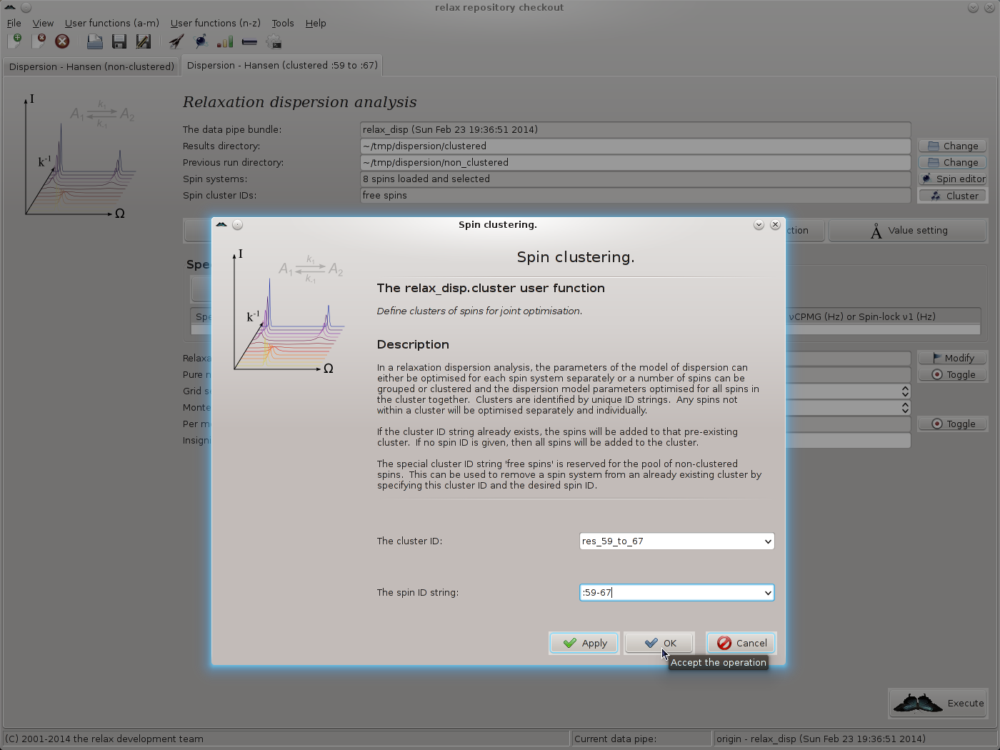
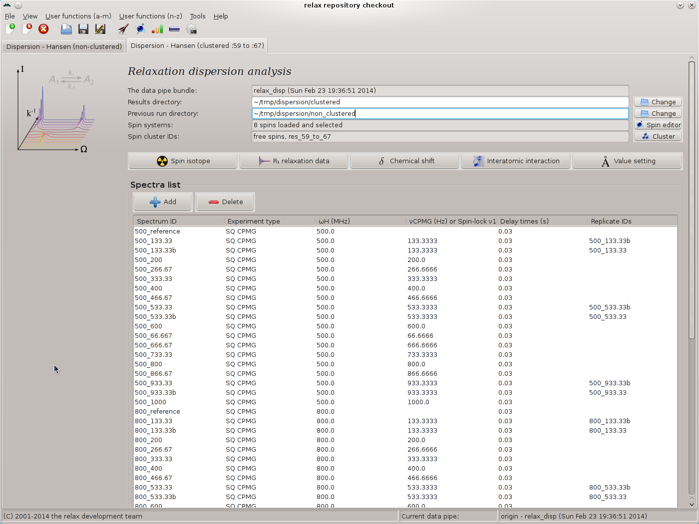

Next: Dispersion GUI mode - Up: The relaxation dispersion auto-analysis Previous: Dispersion GUI mode - Contents Index
Before the second analysis with spin clustering will be performed, the relax state will be saved in the file state.bz2 and the program closed. To store the details of the second analysis in a separate log file, relax will be restarted with the command:
$ mpirun -np 8 /data/relax/relax-trunk/relax -multi='mpi4py' -log  /tmp/dispersion/log_clustered -gui
/tmp/dispersion/log_clustered -gui
When the GUI has started, load the state.bz2 file. If relax is not restarted, all messages will be in a single log file.
For the clustered analysis, we will focus on one group of spins - those from residues :59 to :67. These can be seen to have very similar dynamics:
[basicstyle=\ttfamily \scriptsize,numbers=none] # Parameter description: The population for state A. # # mol_name res_num res_name spin_num spin_name value error [snip] None 59 GLY None N 0.991169677577733 0.0254974551085798 None 60 GLY None N None None None 61 GLY None N 0.989169345780449 0.000173707304433962 None 62 GLY None N 0.892612114003636 0.156741312688688 None 63 GLY None N 0.991579380015928 0.00101555844987099 None 64 GLY None N 0.983519617639107 0.00141882200997569 None 65 GLY None N 0.993831316342131 0.00840481515172743 None 66 GLY None N 0.996816227018878 0.00495523034494496 None 67 GLY None N 0.987206586948786 0.000217099775069814 [snip]
[basicstyle=\ttfamily \scriptsize,numbers=none] # Parameter description: The exchange rate. # # mol_name res_num res_name spin_num spin_name value error [snip] None 59 GLY None N 1856.39029180567 258.796681611922 None 60 GLY None N None None None 61 GLY None N 1706.42820099893 79.5779060629935 None 62 GLY None N 1560.77926730839 246.876174669559 None 63 GLY None N 1448.69535431372 121.940593279104 None 64 GLY None N 1922.2405164604 96.0557804598977 None 65 GLY None N 1333.8423680145 168.000554346898 None 66 GLY None N 1243.45993122534 238.215664971556 None 67 GLY None N 1753.32557147779 78.2028166128168 [snip]
All other spins will be deselected.
From the non-clustered results, it could be argued that all spins in the entire system experience the same dynamic process, i.e. they have the same pA and kex values. Such an analysis could be performed at a later stage if desired. The dispersion curves for the residue :60 could also be inspected to see that dispersion is likely to be present and another clustered analysis including this spin performed. The number of clustered analyses performed is up to the user - imagination is the only limit.
To start the analysis, open the analysis selection wizard as was performed previously.
Name the analysis as `Dispersion - Hansen (clustered :59 to :67)'.
Once the analysis is initialised, change the results directory to  /tmp/dispersion/clustered.
To use the results of the previous analysis to speed up this analysis, as clustering will cause the grid search to be impossibly long, change the ``Previous run directory'' value to
/tmp/dispersion/clustered.
To use the results of the previous analysis to speed up this analysis, as clustering will cause the grid search to be impossibly long, change the ``Previous run directory'' value to  /tmp/dispersion/non_clustered.
/tmp/dispersion/non_clustered.
Set up the spin systems as for the non-clustered analysis. This time however deselect all spins except for those of residues :59 to :67 (excluding :60). This can be performed by right clicking on the spins in the spin viewer window.
The next step is to cluster these eight spins.
In the ``Spin cluster IDs'' GUI element, click on the ``Cluster'' button.
This launches the relax_disp.cluster user function.
Set the cluster ID to ``res_59_to_67'', for example, and the spin ID string to ``:59-67'' (this says all residues from :59 to :67, see section 4.2.2 on page ![[*]](crossref.png) for details):
for details):
|

|
As spin :60 is deselected, that residue will be skipped in the analysis.
Then set the spin isotope and load all of the Sparky peak lists as before. Chose the models `R2eff', `No Rex', `CR72', and `NS CPMG 2-site expanded'. As the `CR72' and `NS CPMG 2-site expanded' were seen as being statistically equivalent in the non-clustered analysis, click on the ``Toggle'' button of the ``Pure numerical solutions'' GUI element to avoid the `CR72' model in the model selection step. Actually, as the initial parameters for the `NS CPMG 2-site expanded' model in the dispersion auto-analysis will be taken as the average from the non-clustered analysis, the `CR72' model could be completely skipped.
Ignore the grid search increment setting as this will have no effect. No grid searches will be performed because the results from the non-clustered analysis will be used as the optimisation starting point. Set the Monte Carlo simulations to 200. The main window should now look like:
|

|
Start the analysis by clicking on the ``Execute'' button. You should notice that the spin cluster printout in the log messages in the relax controller window now show the text:
[numbers=none] The spin cluster [':59', ':60', ':61', ':62', ':63', ':64', ':65', ':66', ':67'].
As residue 60 is deselected, it will not be used in the optimisation or any part of the analysis. The full analysis should take a few hours to complete.